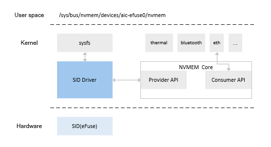
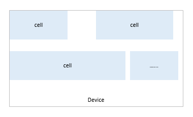

设计说明
15 Jan 2024
Read time: 2 minute(s)
| 相关模块 | 源码路径 |
|---|---|
| NVMEM subsystem | source/linux-5.10/drivers/nvmem/core |
| Driver | source/linux-5.10/drivers/nvmem/artinchip-sid.c |
模块架构
eFuse 在内核中通过 NVMEM 层对接其他各模块。NVMEM 在内核中被虚拟为一个总线上，可以挂载各种 NVMEM 设备。

在内核中，其他模块透过 NVMEM Consumer API 进行读写交互。 在用户空间，应用程序可以通过 sysfs 文件节点 sys/bus/nvmem/devices/*/nvmem 进行读写操作。多数设备仅支持用户空间应用程序读，不支持写。
在 NVMEM 中，有存储设备(Device)和存储单元(Cell) 的概念。除了将 Device 注册到 NVMEM 之外，还可以注册 Cell。 比如 eFuse 中，eFuse 就是一个设备，设备中可以划分 Cell：

在配置 DTS 时可描述 Device 需要暴露的 Cell 信息，包括位置、大小等。比如：
sid: sid@19010000 {
compatible = "artinchip,sid-v1.0";
reg = <0x19010000 0x1000>;
clocks = <&cmu CLK_SID>;
resets = <&rst RESET_SID>;
chip_id: chip-id@10 {
reg = <0x10 0x18>;
};
test-config: test-config@20 {
reg = <0x20 0x1>;
bits = <2 4>;
};
};
此处描述了一个 test-config cell：
-
位置：在 eFuse 的 0x20 字节偏移处
-
长度：0x1 字节
-
内容：从该字节的 2 比特偏移处开始，共 4 比特长的范围
关键流程设计
初始化流程
aic_sid_probe();
|-> res = platform_get_resource(pdev, IORESOURCE_MEM, 0);
|-> sid->base = devm_ioremap_resource(dev, res);
|-> nvmem = devm_nvmem_register(dev, nvmem_cfg);
|-> platform_set_drvdata(pdev, nvmem);数据结构设计
struct aic_sid {
void __iomem *base;
};接口设计
| 函数原型 | int aic_sid_read(void *context, unsigned int offset, void *data, size_t bytes) |
| 功能说明 | eFuse 读取接口 |
| 参数定义 | void *contextSID(eFuse) 设备指针 offset 读取的位置偏移 void *data 输出缓冲区 bytes 读取的数据长度 |
| 返回值 | 0: 成功其他: 失败 |
| 注意事项 | - |